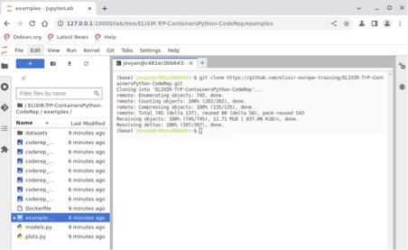

4. To Tie it together and run the Python script
Learning outcomes
After having completed this chapter you will be able to:
- run the Python script using a Docker container on your computer.
- run the Python script using a Juptyer Notebook container on your computer.
We will be using the Elixir CodeRep example workflow (Python version) which can be found here. It is a simplified Machine Learning workflow that attempts to classifty
tumours as benign or malignant based upon characteristics in the data.
More details on the scripts can be found on the afore-mentioned CodeRep Github repository.
As is often the case in Computing problems, when it comes to executing the workflow there are more than one single approach to achieving the goal. We present a few here:
4.1 Running the script within a Jupyter Notebook (via Docker Desktop)
We will use Docker to start a JupyterNotebook within the JupyterLabs environment.
Working with JupyterLabs as a Docker extension begins with opening the Docker Desktop.
Here are the steps to follow:
- Choose Extensions in the left sidebar.
- Switch to the Browse tab.
- In the Categories drop-down, select Utility Tools.
- Find Jupyter Notebook and then select Install.
Wait a bit before the JupyterLabs extension is installed. You can start the extension by the JupyterNotebook icon on the left side of the Docker Desktop menu.
Open a Terminal by clicking the Terminal icon under the Other category. Clone the directory by using git clone.
git clone https://github.com/elixir-europe-training/ELIXIR-TrP-ContainersPython-CodeRep.git
Open the Jupyter notebook in the examples directory of the said repository. You should be able to execute the Python code using the notebook.
In case, you like to extract the output from the notebook, you could run the following docker command. Obviously, you could also download the content via the interface.
docker run --rm --volumes-from jupyter_embedded_dd_vm -v $(pwd):/backup ubuntu tar cvf /backup/backup.tar /home/jovyan/work
4.2 Running the Python script on the command line (2 examples)
In order to run the script using a Docker container, we will use the same Docker image which is used for running the JupyterLab in the example above.
Exercise
docker images
docker image inspect jupyter/scipy-notebook:lab-4.0.6 | grep Working
Furthermore, please clone the above repo again on your local computer. Switch to the examples directory.
In order to run the script, we need to bind mount the local directory where the script and two python files are. Furthermore, we need to specify a working directory upon running the container (and we also need to specify a user and group ID for Linux hosts).
cd examples/
docker run --rm -v $(pwd):/home/jovyan/work/ -w /home/jovyan jupyter/scipy-notebook:lab-4.0.6 python codereppy_min_batch.py
We will use a pre-built Docker image produced by the Jupyter project and will pull it from a quay.io registry (Jupyter appear to be moving away from Docker hub). Futher details on this image and parameters to tailor behaviour when run can be found here.
The raw Dockerfile used to construct this container is inspectable on Github.
NB We could take things further and use this as a source layer in our own dockerfile with the script and data to create a dedicated single purpose container (A topic for an advanced course).
docker run -it --rm -p 10000:8888 -v "${PWD}":/home/jovyan/work quay.io/jupyter/datascience-notebook:2024-01-15
http://127.0.0.1:8888/lab?token=b71632b47d40d57e1173d211d1972c261b70b3bc4d503f50
[I 2024-02-05 16:14:51.455 ServerApp] Skipped non-installed server(s): bash-language-server, dockerfile-language-server-nodejs, javascript-typescript-langserver, jedi-language-server, julia-language-server, pyright, python-language-server, python-lsp-server, r-languageserver, sql-language-server, texlab, typescript-language-server, unified-language-server, vscode-css-languageserver-bin, vscode-html-languageserver-bin, vscode-json-languageserver-bin, yaml-language-server
c[I 2024-02-05 16:22:21.248 LabApp] 302 GET /lab?token=[secret] (@172.17.0.1) 1.28ms
[I 2024-02-05 16:24:56.112 ServerApp] User f99ecbe86c6f4e8aa45a21dd895ac41f logged in.
[I 2024-02-05 16:24:56.113 ServerApp] 302 POST /login?next=%2F (f99ecbe86c6f4e8aa45a21dd895ac41f@172.17.0.1) 2.04ms
[I 2024-02-05 16:24:56.116 ServerApp] 302 GET / (@172.17.0.1) 0.29ms
0.00s - Debugger warning: It seems that frozen modules are being used, which may
0.00s - make the debugger miss breakpoints. Please pass -Xfrozen_modules=off
0.00s - to python to disable frozen modules.
Open byour web rowser to the URL displayed in terminal. At the login screen use the token (displayed after token= line in terminal) .
You will then be in a Jupyter Notebook. As in previous examples navigate to the ‘Other’ screen and activate Terminal.
Example Terminal output after git cloning workflow
(base) jovyan@c481ec0bb643:~$ git clone https://github.com/elixir-europe-training/ELIXIR-TrP-ContainersPython-CodeRep.git
Cloning into 'ELIXIR-TrP-ContainersPython-CodeRep'...
remote: Enumerating objects: 745, done.
remote: Counting objects: 100% (202/202), done.
remote: Compressing objects: 100% (135/135), done.
remote: Total 745 (delta 137), reused 80 (delta 58), pack-reused 543
Receiving objects: 100% (745/745), 12.71 MiB | 837.00 KiB/s, done.
Resolving deltas: 100% (397/397), done.
(base) jovyan@c481ec0bb643:~$

You can now load and run the python file and see the graphs in the Notebook pane.
When you have finished with docker you can clear the downloaded Docker images with:
docker system prune -a
Discussionn exercise - how do these approaches differ? Why would we use one over another?
answer
They produce different outputs and require different levels of command line skills. Which would you choose?
Congratulations! You have reached the end of this course.
We hope that you have learned about this aspect of Reproducible Research and will be able to apply it to your own endeavours!
The Elixir CodeRep Containers team